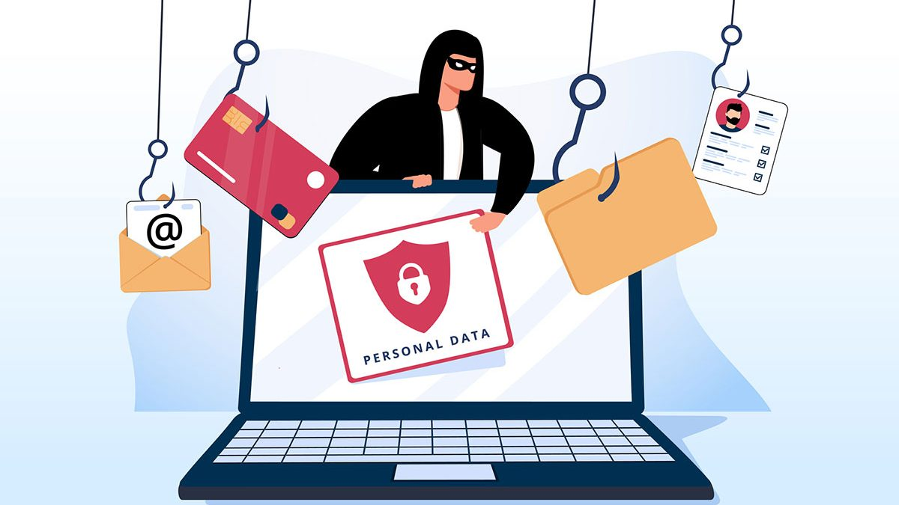

Phishing: Una Amenaza Cibernética Ubicua
El phishing es una de las amenazas cibernéticas más comunes y peligrosas que enfrentamos en la actualidad. Esta técnica se basa en la manipulación psicológica y la suplantación de identidad para engañar a los usuarios y obtener información confidencial, como contraseñas, números de tarjeta de crédito y otros datos sensibles. El término "phishing" proviene de la combinación de las palabras "fishing" (pesca en inglés) y "phreaking" (una forma de pirateo telefónico), lo que refleja la naturaleza engañosa y el intento de "pescar" información confidencial.

¿Cómo funciona el phishing?
El modus operandi típico de un ataque de phishing implica el envío de correos electrónicos, mensajes de texto o mensajes en redes sociales que parecen ser legítimos y provienen de fuentes confiables, como bancos, empresas, o servicios en línea populares. Estos mensajes a menudo incluyen enlaces a sitios web falsos que imitan perfectamente la apariencia de los sitios legítimos. Una vez que el usuario ingresa sus datos en estos sitios falsos, los ciberdelincuentes obtienen acceso a su información.
Variaciones de phishing
El phishing se ha diversificado en varias formas a lo largo de los años:
- Phishing por correo electrónico: Los correos electrónicos de phishing son los más comunes. Los atacantes se hacen pasar por instituciones legítimas y solicitan que el destinatario haga clic en enlaces maliciosos o revele información confidencial.
- Phishing de spear-phishing: En este caso, los atacantes se dirigen específicamente a individuos o empresas, personalizando los mensajes para que sean más convincentes.
- Phishing de smishing: Utiliza mensajes de texto en lugar de correos electrónicos para engañar a las víctimas.
- Phishing en redes sociales: Los ciberdelincuentes utilizan perfiles falsos en redes sociales para engañar a las personas y dirigirlas a sitios web maliciosos.
Consecuencias del Phishing
Los ataques de phishing pueden tener consecuencias devastadoras. Las víctimas pueden perder dinero, sufrir robo de identidad o sufrir daños a su reputación. Las organizaciones también pueden enfrentar pérdidas financieras y daños a su reputación si los ciberdelincuentes obtienen acceso a datos confidenciales de clientes o empleados.
¿Cómo protegerse del phishing?
- Educar a los usuarios: La concienciación es clave. Los usuarios deben ser capacitados para identificar correos electrónicos y mensajes sospechosos.
- Verificar la fuente: Antes de hacer clic en un enlace o proporcionar información, es importante verificar la autenticidad del remitente.
- Usar software de seguridad: Utilizar software antivirus y antiphishing puede ayudar a detectar y bloquear sitios web maliciosos.
- Actualizar contraseñas: Cambiar contraseñas regularmente y utilizar contraseñas fuertes puede dificultar que los atacantes accedan a cuentas.